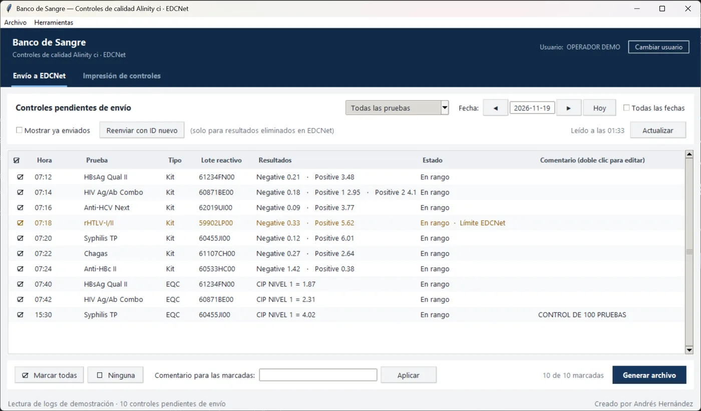
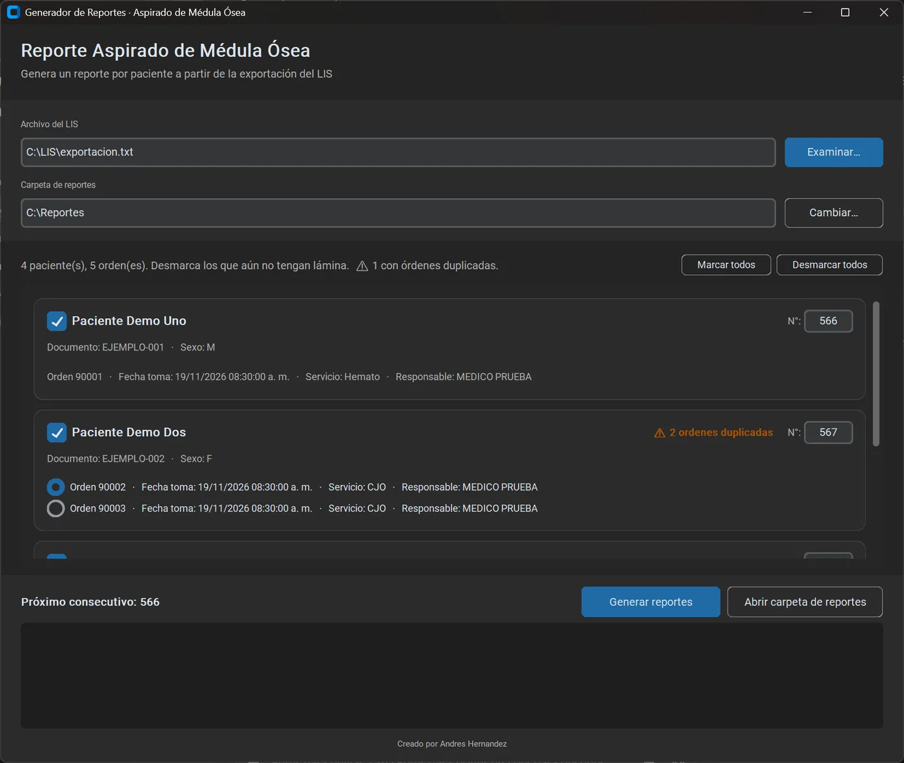
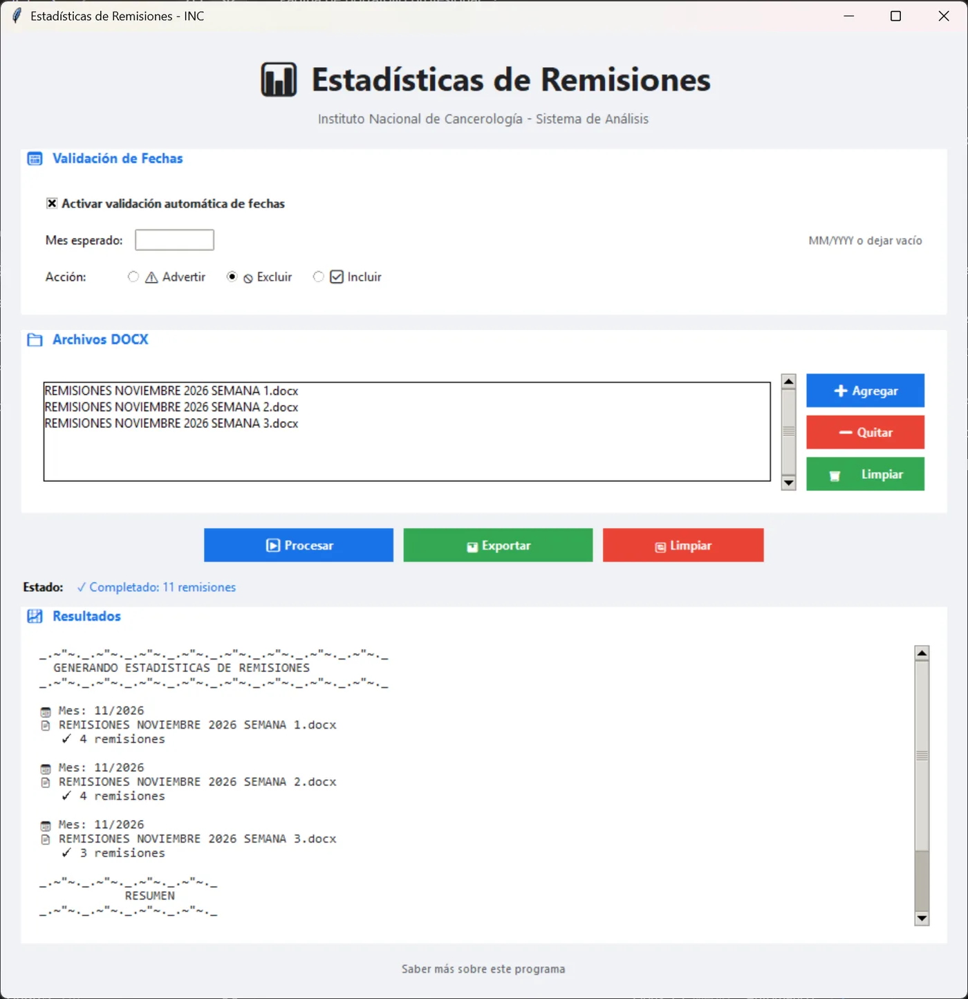
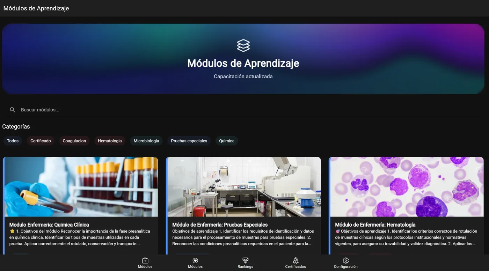

0horas devueltas desde que cada herramienta entró en uso
0herramientas en producción
Proyectos
Ordenados por las horas que devuelven cada mes.
Middleware de control de calidad externo
Abbott Alinity ci → EDCNet · Banco de sangre
Lee los controles de calidad directo del equipo y los sube solos a EDCNet, con alertas de límites y vencimientos. Lo que era una hora diaria de transcripción ahora es un clic.

Abrehojas 3000
Reportes de aspirado de médula ósea
Convierte la exportación del LIS en el reporte de cada paciente en segundos, sin copiar a mano ni duplicar órdenes.

Estadísticas de remisiones
Instituto Nacional de Cancerología
Cuenta solo las pruebas de todas las remisiones del mes y entrega la estadística lista en Excel.

Panel de captación de donantes
Banco de sangre, aféresis plaquetaria
Saca la programación de donantes del Excel y la lleva a un panel de call center con WhatsApp, agenda por sede y recogidas automáticas.
App de entrenamiento de enfermería
Instituto Nacional de Cancerología
App instalable con módulos de formación, quiz, rankings y certificados.

¿Qué proceso sigue haciéndose a mano?
Cuéntame cuánto toma hoy y qué datos ya existen. Te digo si se puede automatizar.